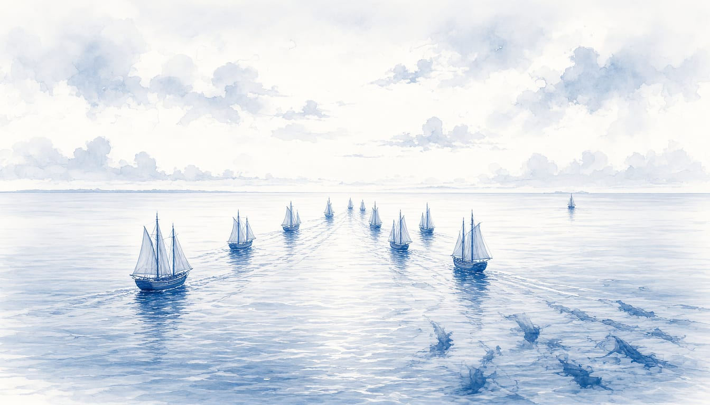

Ten JEF nations, including the Netherlands, to sign naval partnership pact
The agreement commits the ten navies to interchangeable equipment, parts, ammunition and personnel, with command from Northwood in London. A Russian senator called the plan a provocation.